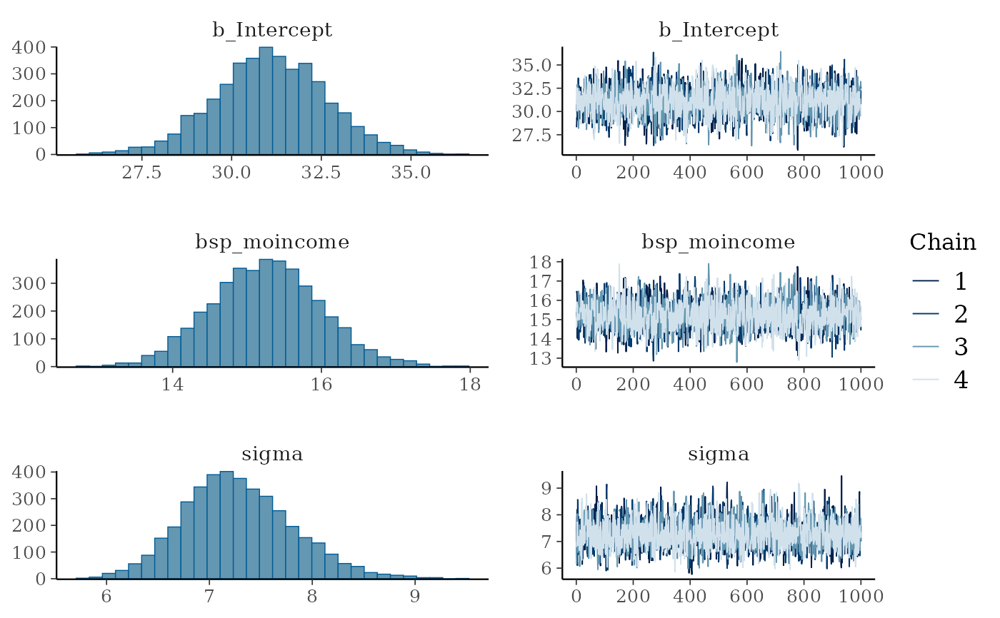
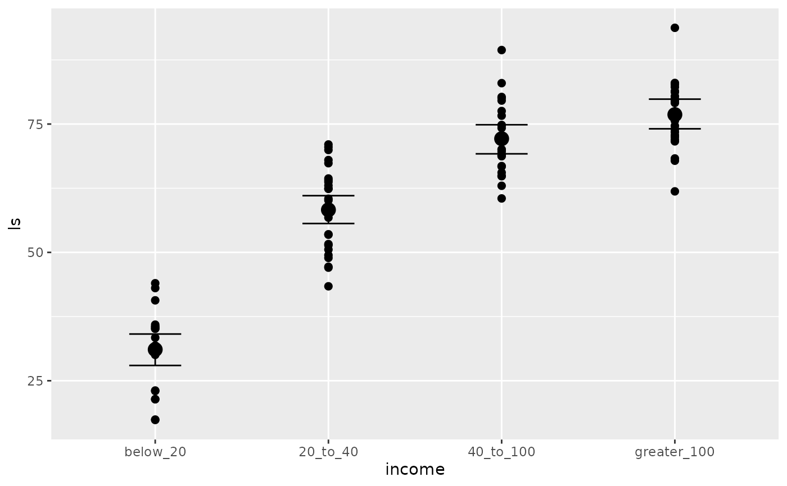

Specify a monotonic predictor term in brms. The function does not evaluate its arguments – it exists purely to help set up a model.
Arguments
- x
An integer variable or an ordered factor to be modeled as monotonic.
- id
Optional character string. All monotonic terms with the same
idwithin one formula will be modeled as having the same simplex (shape) parameter vector. If all monotonic terms of the same predictor have the sameid, the resulting predictions will be conditionally monotonic for all values of interacting covariates (Bürkner & Charpentier, 2020).
Details
See Bürkner and Charpentier (2020) for the underlying theory. For
detailed documentation of the formula syntax used for monotonic terms,
see help(brmsformula) as well as vignette("brms_monotonic").
References
Bürkner P. C. & Charpentier E. (2020). Modeling Monotonic Effects of Ordinal Predictors in Regression Models. British Journal of Mathematical and Statistical Psychology. doi:10.1111/bmsp.12195
Examples
# \dontrun{
# generate some data
income_options <- c("below_20", "20_to_40", "40_to_100", "greater_100")
income <- factor(sample(income_options, 100, TRUE),
levels = income_options, ordered = TRUE)
mean_ls <- c(30, 60, 70, 75)
ls <- mean_ls[income] + rnorm(100, sd = 7)
dat <- data.frame(income, ls)
# fit a simple monotonic model
fit1 <- brm(ls ~ mo(income), data = dat)
#> Compiling Stan program...
#> Start sampling
#>
#> SAMPLING FOR MODEL 'anon_model' NOW (CHAIN 1).
#> Chain 1:
#> Chain 1: Gradient evaluation took 2.9e-05 seconds
#> Chain 1: 1000 transitions using 10 leapfrog steps per transition would take 0.29 seconds.
#> Chain 1: Adjust your expectations accordingly!
#> Chain 1:
#> Chain 1:
#> Chain 1: Iteration: 1 / 2000 [ 0%] (Warmup)
#> Chain 1: Iteration: 200 / 2000 [ 10%] (Warmup)
#> Chain 1: Iteration: 400 / 2000 [ 20%] (Warmup)
#> Chain 1: Iteration: 600 / 2000 [ 30%] (Warmup)
#> Chain 1: Iteration: 800 / 2000 [ 40%] (Warmup)
#> Chain 1: Iteration: 1000 / 2000 [ 50%] (Warmup)
#> Chain 1: Iteration: 1001 / 2000 [ 50%] (Sampling)
#> Chain 1: Iteration: 1200 / 2000 [ 60%] (Sampling)
#> Chain 1: Iteration: 1400 / 2000 [ 70%] (Sampling)
#> Chain 1: Iteration: 1600 / 2000 [ 80%] (Sampling)
#> Chain 1: Iteration: 1800 / 2000 [ 90%] (Sampling)
#> Chain 1: Iteration: 2000 / 2000 [100%] (Sampling)
#> Chain 1:
#> Chain 1: Elapsed Time: 0.206 seconds (Warm-up)
#> Chain 1: 0.161 seconds (Sampling)
#> Chain 1: 0.367 seconds (Total)
#> Chain 1:
#>
#> SAMPLING FOR MODEL 'anon_model' NOW (CHAIN 2).
#> Chain 2:
#> Chain 2: Gradient evaluation took 1.8e-05 seconds
#> Chain 2: 1000 transitions using 10 leapfrog steps per transition would take 0.18 seconds.
#> Chain 2: Adjust your expectations accordingly!
#> Chain 2:
#> Chain 2:
#> Chain 2: Iteration: 1 / 2000 [ 0%] (Warmup)
#> Chain 2: Iteration: 200 / 2000 [ 10%] (Warmup)
#> Chain 2: Iteration: 400 / 2000 [ 20%] (Warmup)
#> Chain 2: Iteration: 600 / 2000 [ 30%] (Warmup)
#> Chain 2: Iteration: 800 / 2000 [ 40%] (Warmup)
#> Chain 2: Iteration: 1000 / 2000 [ 50%] (Warmup)
#> Chain 2: Iteration: 1001 / 2000 [ 50%] (Sampling)
#> Chain 2: Iteration: 1200 / 2000 [ 60%] (Sampling)
#> Chain 2: Iteration: 1400 / 2000 [ 70%] (Sampling)
#> Chain 2: Iteration: 1600 / 2000 [ 80%] (Sampling)
#> Chain 2: Iteration: 1800 / 2000 [ 90%] (Sampling)
#> Chain 2: Iteration: 2000 / 2000 [100%] (Sampling)
#> Chain 2:
#> Chain 2: Elapsed Time: 0.206 seconds (Warm-up)
#> Chain 2: 0.188 seconds (Sampling)
#> Chain 2: 0.394 seconds (Total)
#> Chain 2:
#>
#> SAMPLING FOR MODEL 'anon_model' NOW (CHAIN 3).
#> Chain 3:
#> Chain 3: Gradient evaluation took 4.5e-05 seconds
#> Chain 3: 1000 transitions using 10 leapfrog steps per transition would take 0.45 seconds.
#> Chain 3: Adjust your expectations accordingly!
#> Chain 3:
#> Chain 3:
#> Chain 3: Iteration: 1 / 2000 [ 0%] (Warmup)
#> Chain 3: Iteration: 200 / 2000 [ 10%] (Warmup)
#> Chain 3: Iteration: 400 / 2000 [ 20%] (Warmup)
#> Chain 3: Iteration: 600 / 2000 [ 30%] (Warmup)
#> Chain 3: Iteration: 800 / 2000 [ 40%] (Warmup)
#> Chain 3: Iteration: 1000 / 2000 [ 50%] (Warmup)
#> Chain 3: Iteration: 1001 / 2000 [ 50%] (Sampling)
#> Chain 3: Iteration: 1200 / 2000 [ 60%] (Sampling)
#> Chain 3: Iteration: 1400 / 2000 [ 70%] (Sampling)
#> Chain 3: Iteration: 1600 / 2000 [ 80%] (Sampling)
#> Chain 3: Iteration: 1800 / 2000 [ 90%] (Sampling)
#> Chain 3: Iteration: 2000 / 2000 [100%] (Sampling)
#> Chain 3:
#> Chain 3: Elapsed Time: 0.207 seconds (Warm-up)
#> Chain 3: 0.186 seconds (Sampling)
#> Chain 3: 0.393 seconds (Total)
#> Chain 3:
#>
#> SAMPLING FOR MODEL 'anon_model' NOW (CHAIN 4).
#> Chain 4:
#> Chain 4: Gradient evaluation took 1.8e-05 seconds
#> Chain 4: 1000 transitions using 10 leapfrog steps per transition would take 0.18 seconds.
#> Chain 4: Adjust your expectations accordingly!
#> Chain 4:
#> Chain 4:
#> Chain 4: Iteration: 1 / 2000 [ 0%] (Warmup)
#> Chain 4: Iteration: 200 / 2000 [ 10%] (Warmup)
#> Chain 4: Iteration: 400 / 2000 [ 20%] (Warmup)
#> Chain 4: Iteration: 600 / 2000 [ 30%] (Warmup)
#> Chain 4: Iteration: 800 / 2000 [ 40%] (Warmup)
#> Chain 4: Iteration: 1000 / 2000 [ 50%] (Warmup)
#> Chain 4: Iteration: 1001 / 2000 [ 50%] (Sampling)
#> Chain 4: Iteration: 1200 / 2000 [ 60%] (Sampling)
#> Chain 4: Iteration: 1400 / 2000 [ 70%] (Sampling)
#> Chain 4: Iteration: 1600 / 2000 [ 80%] (Sampling)
#> Chain 4: Iteration: 1800 / 2000 [ 90%] (Sampling)
#> Chain 4: Iteration: 2000 / 2000 [100%] (Sampling)
#> Chain 4:
#> Chain 4: Elapsed Time: 0.191 seconds (Warm-up)
#> Chain 4: 0.183 seconds (Sampling)
#> Chain 4: 0.374 seconds (Total)
#> Chain 4:
summary(fit1)
#> Family: gaussian
#> Links: mu = identity
#> Formula: ls ~ mo(income)
#> Data: dat (Number of observations: 100)
#> Draws: 4 chains, each with iter = 2000; warmup = 1000; thin = 1;
#> total post-warmup draws = 4000
#>
#> Regression Coefficients:
#> Estimate Est.Error l-95% CI u-95% CI Rhat Bulk_ESS Tail_ESS
#> Intercept 31.08 1.56 27.98 34.10 1.00 2509 2123
#> moincome 15.26 0.73 13.86 16.73 1.00 2431 2314
#>
#> Monotonic Simplex Parameters:
#> Estimate Est.Error l-95% CI u-95% CI Rhat Bulk_ESS Tail_ESS
#> moincome1[1] 0.59 0.04 0.52 0.67 1.00 2760 2384
#> moincome1[2] 0.30 0.05 0.22 0.39 1.00 3638 2770
#> moincome1[3] 0.10 0.04 0.02 0.19 1.00 2893 1480
#>
#> Further Distributional Parameters:
#> Estimate Est.Error l-95% CI u-95% CI Rhat Bulk_ESS Tail_ESS
#> sigma 7.28 0.53 6.32 8.41 1.00 3151 2302
#>
#> Draws were sampled using sampling(NUTS). For each parameter, Bulk_ESS
#> and Tail_ESS are effective sample size measures, and Rhat is the potential
#> scale reduction factor on split chains (at convergence, Rhat = 1).
plot(fit1, N = 6)
#> Warning: Argument 'N' is deprecated. Please use argument 'nvariables' instead.

plot(conditional_effects(fit1), points = TRUE)

# model interaction with other variables
dat$x <- sample(c("a", "b", "c"), 100, TRUE)
fit2 <- brm(ls ~ mo(income)*x, data = dat)
#> Error in `$<-.data.frame`(`*tmp*`, "Ic", value = c(0, 1)): replacement has 2 rows, data has 3
summary(fit2)
#> Error: object 'fit2' not found
plot(conditional_effects(fit2), points = TRUE)
#> Error: object 'fit2' not found
# ensure conditional monotonicity
fit3 <- brm(ls ~ mo(income, id = "i")*x, data = dat)
#> Error in `$<-.data.frame`(`*tmp*`, "Ic", value = c(0, 1)): replacement has 2 rows, data has 3
summary(fit3)
#> Error: object 'fit3' not found
plot(conditional_effects(fit3), points = TRUE)
#> Error: object 'fit3' not found
# }